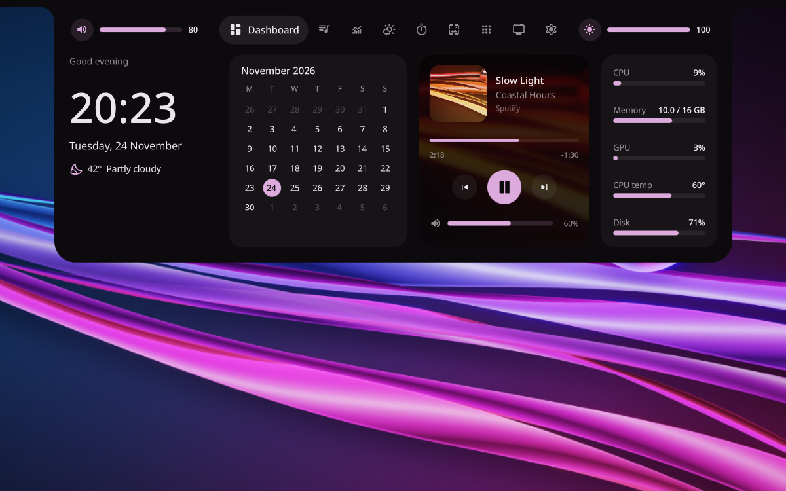
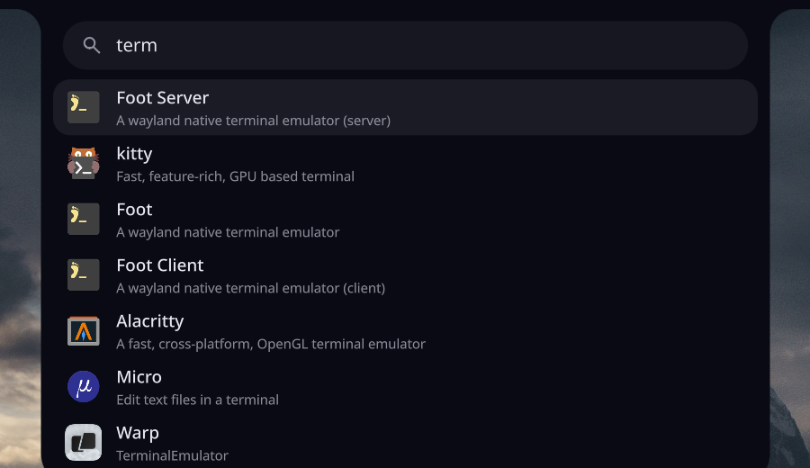
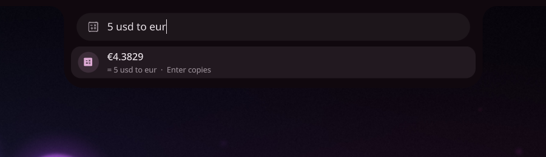
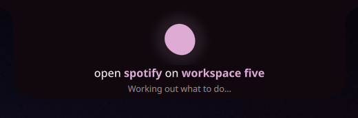
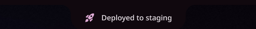

One design language, from the bar to the lock screen.
bead replaces your bar, launcher, notification daemon and lock screen with pieces that share one look and one motion: springs, gooey edges, colours from the wallpaper.



Press Super. The island becomes everything.
The pill at the top of the screen shows what's playing, timers, recordings and calls. Press Super and it grows into a launcher that does more than open apps.
- Apps, with the ones you use most floating up · press Tab on one for actions
- Maths and units ·
5 usd to eur - Open windows, files, clipboard history and emoji
- Ask Claude a question · start with
?


Talk to your desktop, offline.
Optional: Murmur runs speech recognition and a small model on your own GPU. Nothing leaves the machine.
- "Open Thunar on workspace 3, close the rest"
- Dictate into any window, or reply to a notification by voice
- Teach it: do a few things, then say "save that as focus"
TintColours drawn from your wallpaper, vibrant, muted or mono, rippling out from the island when they change.
NotificationsGrow out of the frame, stack per app, reply inline, Do Not Disturb with a digest.
SettingsA window of its own, fourteen pages, and a search across every setting.
OverviewSuper+Tab: every workspace, drag windows between them, float, pin or close from the keys.
DisplaysDrag your monitors to arrange them. Every change is a trial that undoes itself unless you keep it.
Lock screenbead's own, with idle handling that waits while something's playing.
WallpapersSix of bead's own, your stills, or live Wallpaper Engine scenes.
GlintToasts from the terminal and from Claude Code: done, approve, choose.
bead doctorChecks everything bead needs and gives a one-line fix for anything missing.
Everything is a key away.
LauncherSuper
OverviewSuper Tab
DashboardSuper K
NotificationsSuper N
Clipboard · emojiSuper V · Super .
Screenshot an areaSuper Shift S
Voice command (hold)Super Space
DictateSuper A
LockSuper L
Every key, in beadtype
keys in the launcherMake Hyprland feel soft.
Free, open source, and yours to change. Keeping it current is bead update; taking it off is bead uninstall.